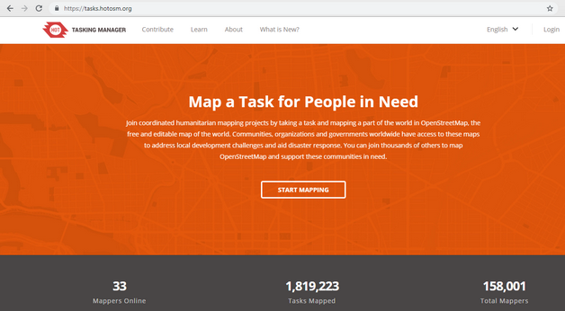
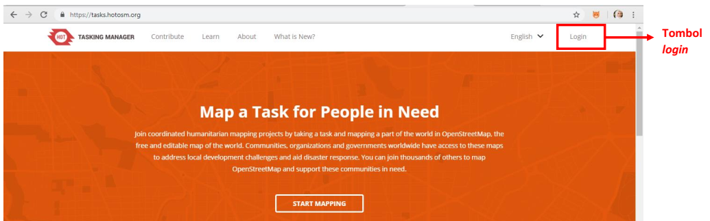
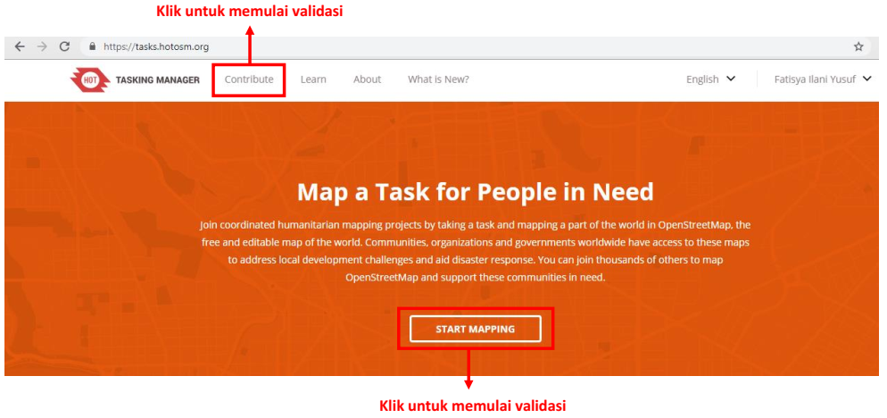
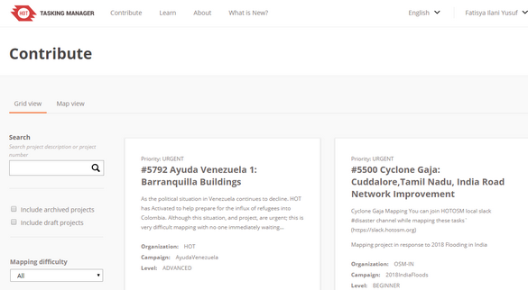
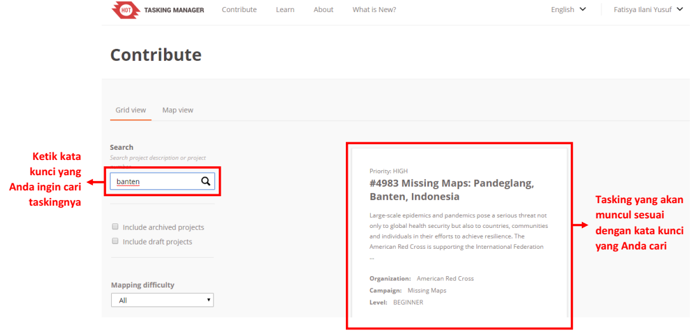
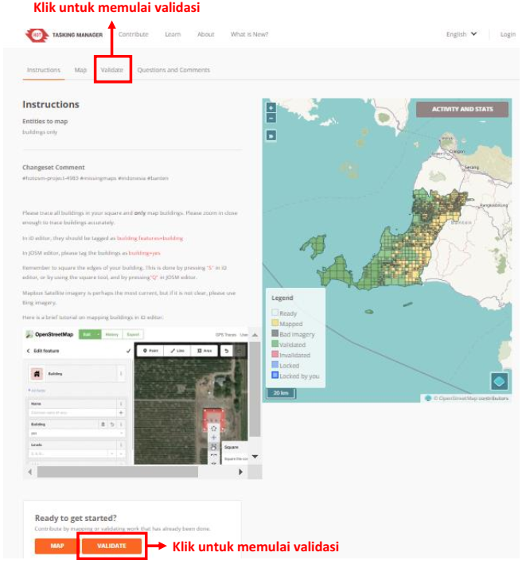
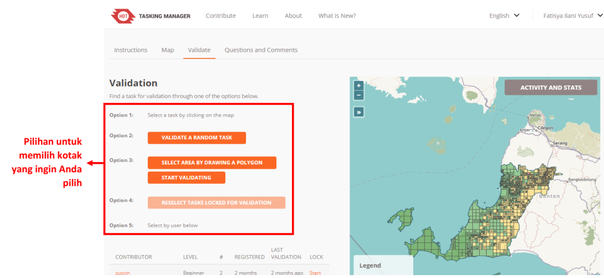
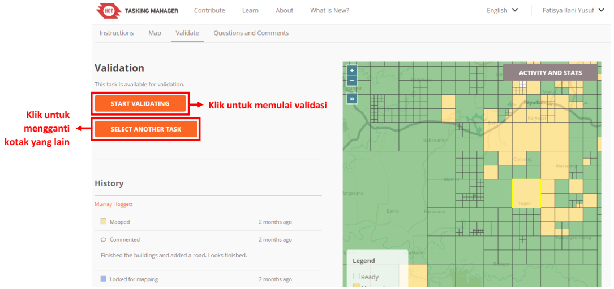
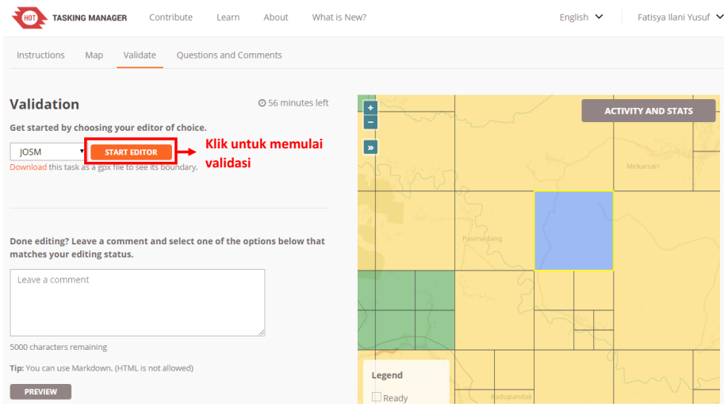
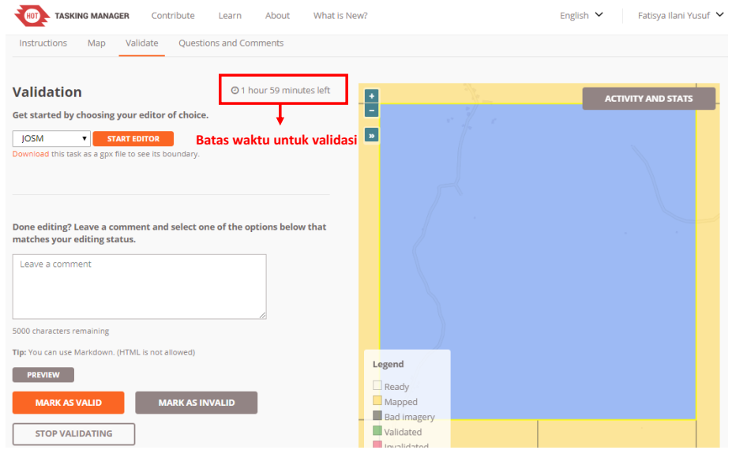

Penjaminan Kualitas Data dengan Tasking Manager
Tujuan Pembelajaran:
- Memahami penjaminan kualitas data dengan menggunakan Tasking Manager
Sebelumnya Anda pasti sudah pernah editing data OpenStreetMap menggunakan tasking manager. Tasking manager memudahkan Anda untuk mengedit data OpenStreetMap secara bersama-sama tanpa harus khawatir akan terjadi konflik dengan orang lain karena mengerjakan area yang sama. Selain untuk mengedit data OpenStreetMap, Anda juga dapat melakukan validasi menggunakan tasking manager sehingga Anda dapat melakukan validasi secara bersama-sama.
I. Penjaminan Kualitas Data dengan Tasking Manager
a. Validasi Area Proyek Tasking
Cara untuk melakukan validasi dengan menggunakan tasking manager tidak jauh berbeda dengan cara mengedit di tasking manager. Berikut ini adalah langkah-langkah untuk melakukan validasi menggunakan tasking manager.
- Buka web browser Anda dan silakan mengakses ke https://tasks.hotosm.org/.
- Anda akan melihat tampilan browser Anda seperti gambar di bawah ini.

- Silakan Anda login atau masuk terlebih dahulu menggunakan akun OpenStreetMap Anda dengan cara mengklik pada tombol Login di sebelah pojok kanan atas.

- Anda akan langsung diarahkan ke situs OpenStreetMap dan silakan Anda klik Grant Access untuk mengizinkan akun Anda diakses oleh tasking manager.

- Selanjutnya Anda sudah berhasil login di tasking manager. Anda dapat memulai validasi dengan cara klik tombol Contribute atau klik Start Mapping.

- Kemudian tampilan Anda akan seperti gambar di bawah ini.

- Anda dapat memilih salah satu dari banyak tasking yang ada untuk Anda validasi. Atau Anda juga dapat mencari tasking yang ingin Anda validasi dengan cara mengetik kata kunci di kolom Search pada sisi sebelah kiri tampilan tasking manager Anda, kemudian tekan Enter. Anda akan melihat daftar tasking yang berkaitan dengan kata kunci yang sebelumnya Anda cari. Silakan cari dan pilih tasking yang ingin Anda validasi.

- Setelah Anda pilih tasking yang ingin Anda validasi, Anda akan melihat penjelasan umum mengenai tasking tersebut.

- Jika Anda scroll ke bawah, Anda akan melihat Instructions tasking tersebut. Di atas instructions terdapat 4 tab, salah satunya adalah validate. Anda dapat memulai validasi dengan cara klik tab Validate. Selain dengan cara klik tab validate, di bagian paling bawah terdapat kotak pertanyaan “Ready to get started?” dengan pilihan Map dan Validate, silakan Anda pilih Validate.

-
Sebagai informasi, kotak atau grid yang akan Anda validasi adalah kotak yang sudah dipetakan yaitu kotak yang berwarna oranye. Ketika Anda sudah selesai melakukan validasi, kotak yang Anda kerjakan akan berubah menjadi warna hijau.
-
Setelah Anda klik validate, terdapat beberapa pilihan untuk memilih kotak mana yang mau Anda pilih. Untuk yang perannya sebagai mapper atau validator, pilihannya hanya ada dua pilihan, yaitu pilihan pertama dan pilihan kedua, sedangkankan untuk kelima pilihan ini hanya dapat dilakukan oleh yang perannya project manager. Berikut ini adalah pilihan-pilihannya:
-
Pilihan yang pertama adalah memilih sendiri kotak warna oranye yang mana yang ingin Anda kerjakan.
-
Pilihan yang kedua adalah membiarkan tasking memilihkan kotak untuk divalidasi secara acak.
-
Pilihan yang ketiga adalah memilih area yang akan divalidasi dengan cara menggambar poligon sesuai dengan keinginan Anda, dan kemudian tasking akan otomatis terpilih beberapa kotak tasking sesuai dengan area poligon yang Anda buat, kemudian klik start validating yang berada di pilihan ketiga.
-
Pilihan keempat dapat dipilih ketika Anda sudah lock salah satu kotak tasking, tetapi Anda lupa kotak yang mana yang sudah Anda pilih. Setelah Anda klik pilihan nomor empat, maka tasking akan otomatis menunjukkan kotak yang sudah Anda pilih.
-
Pilihan kelima adalah memilih kotak tasking berdasarkan nama kontributor di bawah pilihan kelima.
-

- Ketika Anda sudah memilih kotak mana yang ingin Anda kerjakan, sekeliling kotak Anda akan berubah warna menjadi warna kuning. Anda dapat memulai validasi dengan memilih kotak Start Validating. Jika Anda ingin mengganti kotaknya, Anda dapat memilih kotak Select Another Task.

- Jika Anda sudah klik Start Validating, warna kotak yang Anda pilih akan berubah menjadi warna biru dengan warna kuning di sekeliling kotak. Hal ini menandakan Anda telah mengaktifkan kotak untuk divalidasi. Anda akan dapat memilih tools apa yang ingin Anda gunakan untuk melakukan validasi. Anda dapat menggunakan iD Editor, JOSM, Potlatch 2, dan Field Papers. Anda disarankan untuk menggunakan JOSM dalam melakukan validasi karena JOSM memiliki lebih banyak fitur untuk mengedit.

- Setelah Anda pilih JOSM sebagai alat untuk validasi, Anda dapat langsung klik Start Editor.

- Setelah Anda klik Start Editor, JOSM akan secara otomatis men-download data OpenStreetMap sesuai dengan grid/kotak yang telah Anda pilih. Untuk menggunakan JOSM sebagai alat validasi, Anda dapat mempelajari lewat modul JOSM Untuk Perhitungan Kualitas Data.
- Setelah Anda selesai melakukan validasi di JOSM dan semua objek sudah terpetakan, silakan Anda kembali ke web browser tasking manager Anda dan klik Mark as Valid. Jika grid/kotak yang Anda pilih belum terpetakan secara keseluruhan atau masih banyak objek yang belum sesuai dipetakan, Anda dapat klik Mark as Invalid. Anda juga dapat menambahkan komentar alasan kotak tersebut di Mark as Invalid, misalnya banyak objek yang belum terpetakan, agar kontributor berikutnya yang memilih kotak tersebut mengetahui kesalahannya. Setelah Anda klik Mark as Invalid, kontributor lain dapat mengerjakan ulang atau menambahkan data pada kotak tasking yang sudah Anda Mark as Invalid tersebut. Jika Anda ingin mengganti kotak tasking untuk divalidasi, Anda dapat klik Stop Validating, sehingga orang lain dapat melanjutkan validasi di kotak tersebut.

- Jika Anda klik Mark as Valid, maka kotak tasking yang sebelumnya Anda pilih berubah warna menjadi hijau. Jika Anda klik Mark as Invalid, maka kotak tasking yang sebelumnya Anda pilih berubah warna menjadi merah muda. Jika Anda klik Stop Validating, maka kotak tasking yang sebelumnya Anda pilih berubah kembali menjadi berwarna oranye.
- Jika sudah selesai melakukan validasi dalam satu kotak tasking, Anda dapat melakukan validasi di kotak lain yang berwarna oranye. Silakan Anda lakukan validasi sesuai dengan langkah-langkah sebelumnya
b. Hal-hal yang Harus Diperhatikan Saat Melakukan Validasi di Proyek Tasking
Saat Anda melakukan validasi menggunakan tasking manager terdapat hal yang harus diperhatikan, yaitu batas waktu untuk mengerjakan kotak yang sudah Anda pilih. Jika Anda sudah memulai validasi, terdapat batasan waktu untuk mengerjakan tasking yang Anda pilih di bagian atas seperti di bawah ini:

Batas waktu untuk mengerjakan validasi menggunakan tasking manager ini adalah dua jam. Setelah melewati dua jam (120 menit), tasking akan otomatis terbuka kembali atau unlock kotak tasking yang Anda pilih. Jika Anda sedang melakukan validasi dan membutuhkan waktu lebih dari dua jam, sebaiknya Anda klik Stop Validating terlebih dahulu sebelum durasi dua jam tersebut habis, kemudian pilih Start Editor kembali. Kemudian Anda dapat melanjutkan validasi kembali.
RINGKASAN
Anda telah mempelajari dan mempraktikkan bagaimana cara untuk melakukan validasi menggunakan tasking manager. Validasi menggunakan tasking manager ini memudahkan Anda untuk melakukan validasi secara bersama-sama dengan orang lain sehingga proses validasi dapat lebih cepat diselesaikan. Selanjutnya Anda akan mempelajari cara penggunaan JOSM untuk menghitung kualitas data di OSM.